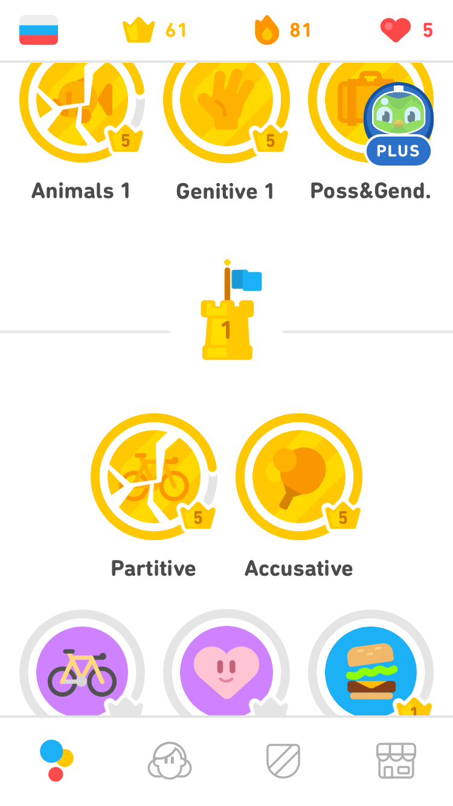
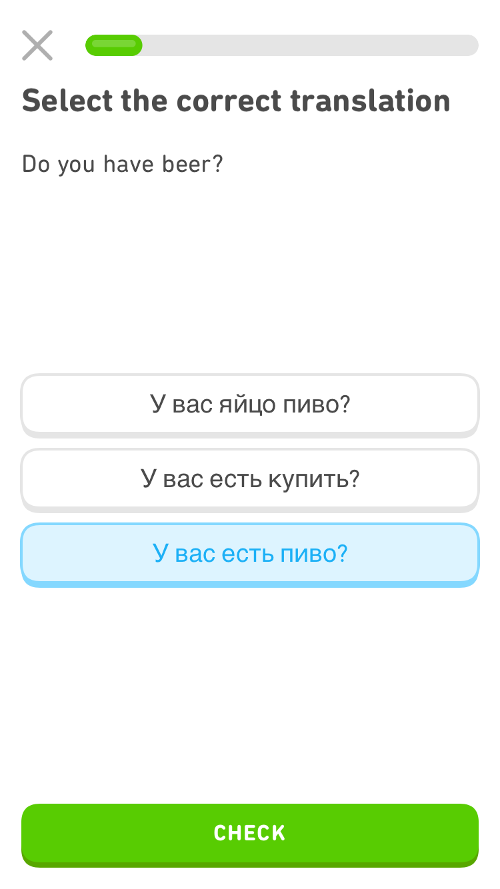
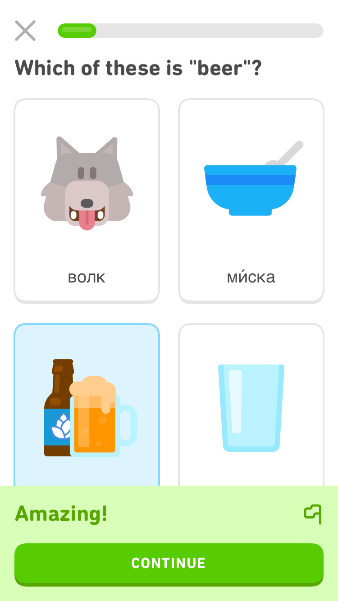
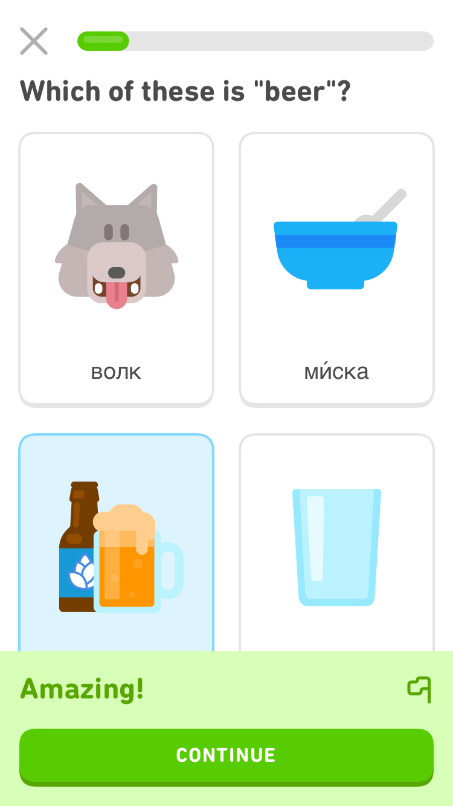
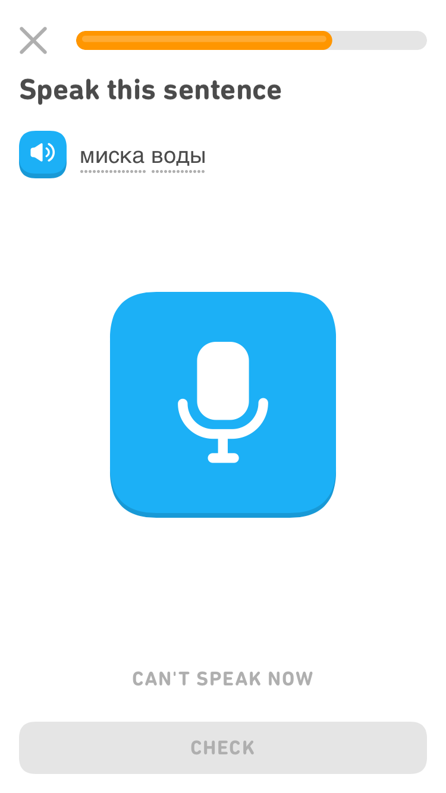
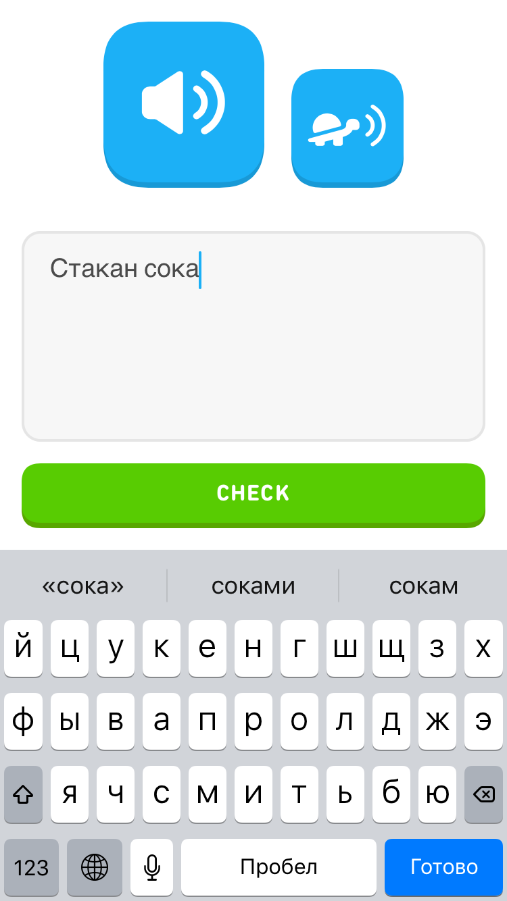

Duolingo Talks More than Listens
:: Duolingo gives short, low-context passages of text and speech for free The biggest plus is how it presents phrases and sentence structures so you're not just learning stray vocabulary. You hear native speakers give you the correct pronunciation. It's very gamified so you can earn hearts and coins which you can spend on more lessons, which only take a few minutes. Answering incorrectly looses hearts and makes you wait a while for them to renew, putting pressure on you to learn and perform well.
A con is the lack of vocabulary lists. Neither are there vocabulary centered features. I use a physical list and you can find more about my language learning strategy and other apps I use here The app's voice recognition technology can be t. It's also frustrating to misspell a word and lose a heart. It's good for beginners but can be tough to really develop into a true speaker, even if you master the entire program for a said language. While you can understanding structures of a language, it doesn’t offer much besides translation and pronunciation.
How it works
The lessons are about gramatical and lexical topics like, animals, partitives, genetive, accusative, etc...When you open Duolingo you will see this screen ↘. This is your progress chart. It shows how far you've progressed. The yellow crowns show your level and I've these are at level 5. The ones with grey rings around them are still in progress and the yellow ones with fractures are old lessons that were completed but need to be reviewed. The app by itself will almost always try to keep three “fractured lesson" available on the intro screen for review.
There are a lot of different ways that the app teaches you vocabulary. Some are through pictures, some through translation, and some through listening or speaking. On the left is multiple choice with pictures, you just have to look at the English words and get exposed to it.
Multiple choice use sentence translations. Sometimes they are English to Russian (or whatever language you’re learning) other times they are Russian to English.  If you click on the individual words, it will give you the pronunciations of the word.
There are two kinds of listening activities. One where you listen and you just select the words. The other one you have to write the words from memory (eek).
For both types of listening activities there is a normal speed and a slow speed.  To hear the slow speed, click on the turtle.
To hear the slow speed, click on the turtle.
Here’s a look at the second type of listening activity. A bit more intimidating as you have to type it correctly. The app is pretty tough on spelling, if you get more than one or two letters wrong then you will get it wrong.
The last type of activity is the speaking activity. This one is pretty tough as well. The app wants you to have perfect pronunciation. I rarely get these right and since it is so tough on your pronunciation, they can be impossible for some languages. For the reason of time, and also not feeling depressed from rarely getting them right, I just skip them. To skip a listening or speaking activity you can click “Can’t speak now”/”I can’t listen now” and it will skip the activity. You won’t be punished for skipped activities in this way.